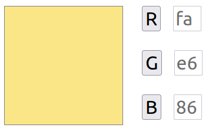
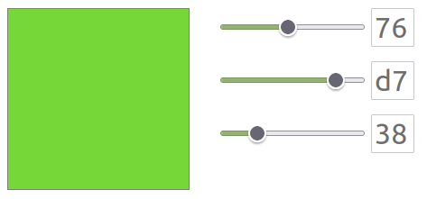

Variante 1
Ecrire une page HTML contenant- Une div carrée de 200 px par 200 px.
- 3 boutons ayant comme texte "R", "G", et "B"
-
3 zones de texte (
input type="text"), non éditables, pouvant contenir 2 caractères.
Chaque zone de texte est asociée à un bouton, et va correspondre à la valeur en hexadécimal de la composante R, G ou B de la couleur de fond de la div.
Chaque fois qu'on clique sur un bouton,
- la valeur de la zone texte correspondante est incrémentée de 10 (en base 10).
- La couleur de fond de la div change de manière à refléter la nouvelle valeur de la zone texte.
Exemple de résultat : 
Variante 2
Remplacez les boutons par desinput type="range", pouvant prendre une valeur de 0 à 255.
Lorsqu'on modifie la position du curseur, la couleur de fond de la div se met à jour, ainsi que les valeurs des zones texte (qui affichent toujours la valeur en base 16).
Exemple de résultat : 